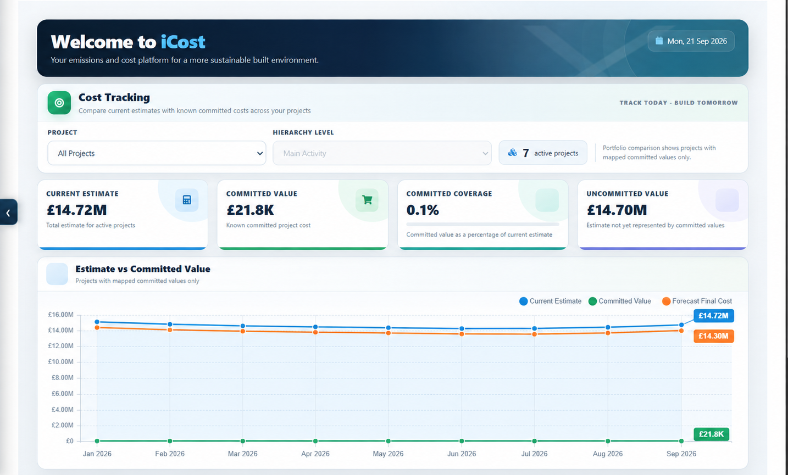
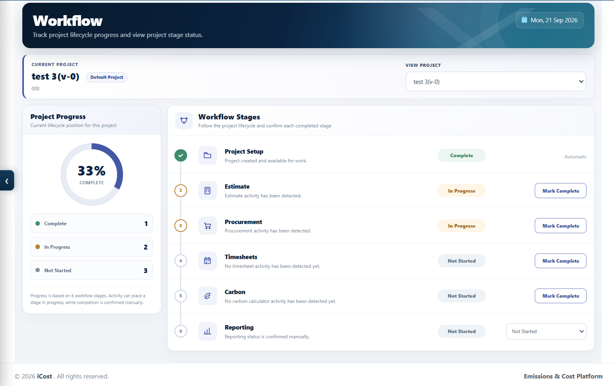
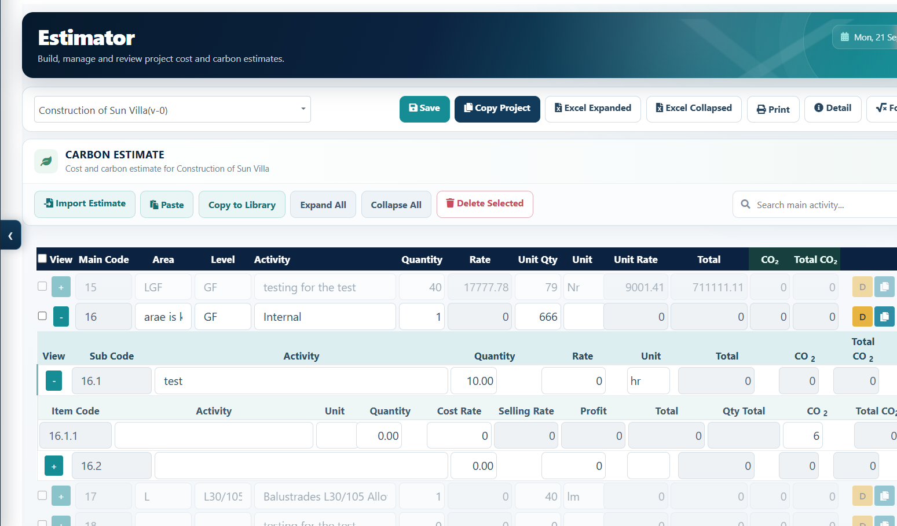
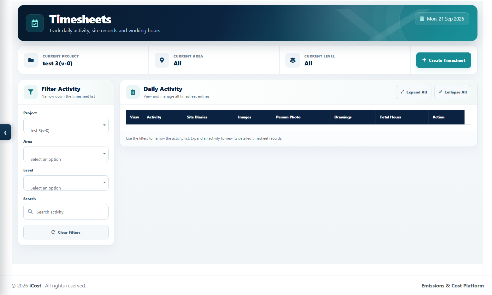

See the cost position
Compare current estimates, committed value and forecast final cost across active projects.
- Portfolio-level cost tracking
- Committed coverage
- Forecast movement

Construction margin protection and procurement control
I-Cost connects estimating, procurement, suppliers, site activity and commercial reporting so you can identify margin leakage before it becomes a loss.
Most margin is not lost at tender. It leaks during delivery.
The platform in practice
Scroll through the real I-Cost interface. Each view brings project activity, cost and delivery information into one controlled workflow.
Compare current estimates, committed value and forecast final cost across active projects.
Follow project setup, estimating, procurement, timesheets, carbon and reporting through a visible lifecycle.

Create detailed cost and carbon estimates that remain connected to procurement and project delivery.

Link daily activity, records and working hours back to the commercial picture.

Interface shown with demonstration project data.
Where is your margin going?
Every handoff can move the margin. I-Cost makes the commercial effect visible before the business commits.
Set the tender and package baseline.
Compare quotes before commitment.
Measure true value, not price alone.
Capture waste, downtime and extras.
Price, submit, approve and recover.
Commercial control in practice
Identify where margin is currently exposed.
Apply the workflow to a live, controlled scope.
Quantify avoided leakage and recovered value.
Roll proven controls across the portfolio.
Protect the margin you already won
We will help you identify the commercial controls, information gaps and recovery opportunities worth addressing first.